Product and engineering confidence dossier · August 2026
Job Seeker
Copilot
A self-contained account of the working software, service architecture, verification evidence and intended AWS implementation.
Controlled private beta31 repositories28 application servicesConfidence edition · v3
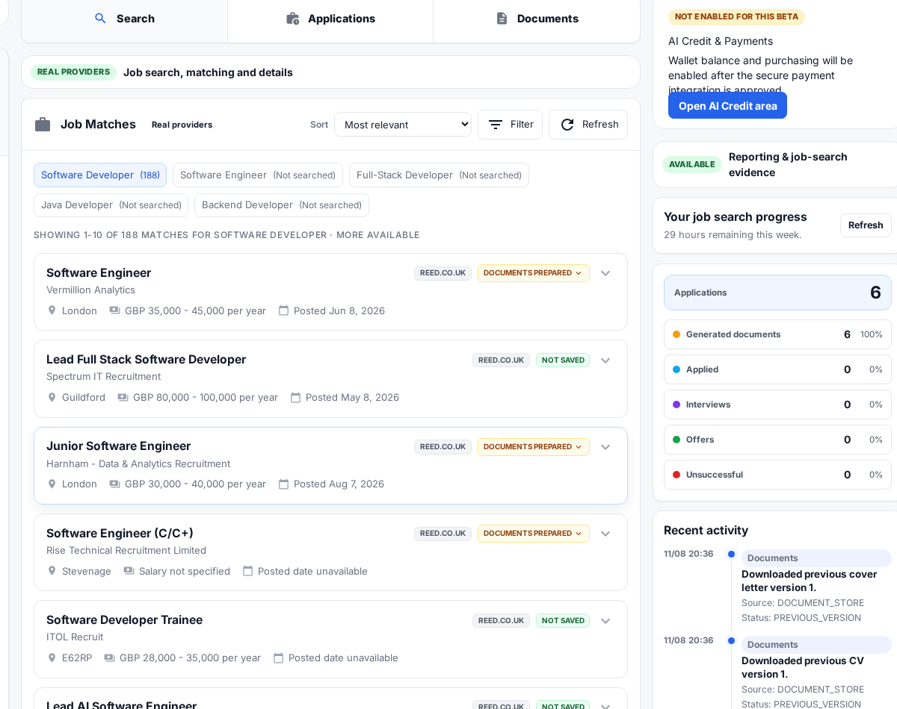
Prepared for recruiters, engineering reviewers, potential partners and pilot organisations. The dossier explains the system without requiring access to private source repositories.
How to read this dossier
Start with confidence; continue into the engineering
The opening pages establish what is working and how it has been verified. The middle explains product behaviour, data ownership and operational boundaries. The appendix describes every repository and its runtime communications so a reader does not need private GitHub access.
Part I · Product confidence
03 Executive overview
04 What is built and demonstrated
05 Engineering timeline
06 Connected product walkthrough
Part II · Architecture and product domains
07 Architecture principles
08 Domain architecture
09 Runtime communication map
10 Frontend and BFF
11 Authentication
12 Profile and Evidence Library
13 Evidence selection
14 Job discovery
15 Provider architecture
16 Canonicalisation and dedupe
17 Applications
18 Documents
19 Lineage
Part III · Documents and supporting domains
20 Generation operation
21 Grounding and recovery
22 Document export
23 Wallet and payments
24 Location and commute
25 Reporting
26 System Data
27 Runtime environments
Part IV · Verification and implementation
28 Executable showcase
29 Testing by layer
30 Real/manual confidence
31 Capacity evidence
32–33 AWS implementation path
34 Contracts and delivery
35–36 Defect-driven correction
37 Safety and boundaries
38 Confidence statement
39–45 Complete service catalogue
Evidence boundary. Present-day claims were checked against source, contracts and the running environment. Historical claims use Git/PR/issue evidence. Dated reports prove only their named conditions.
Executive overview
One workspace for the fragmented work of finding a job
Job Seeker Copilot helps a candidate organise career evidence, discover vacancies, prepare tailored documents, track applications and retain an auditable record of what was used.
The product is a connected workflow: structured evidence and a genuine vacancy become versioned, application-specific documents and an owned application record.
Candidate problem
Vacancies, versions, portals, evidence and follow-up are scattered across tools.
Product response
Structured profile, multi-provider discovery, document lineage and application tracking.
Engineering response
Owned domain state, provider gateways, versioned contracts and recoverable workflows.
Current boundary
Controlled private beta; local persistent operation, not public production.
31repositories audited—not used as a vanity metric
28application services in the audited manual profile
7independent PostgreSQL state owners
5job-provider domains
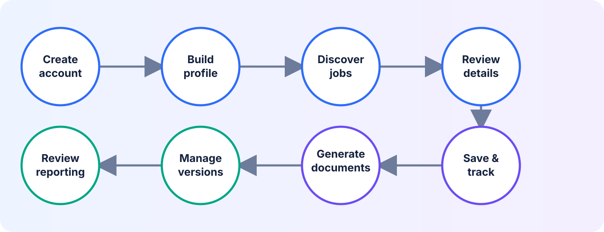
What is built and demonstrated
Confidence comes from several independent kinds of evidence
28application services passed the audited persistent-manual health contract
32/32retained full Cucumber regression scenarios passed on 11 August
25/25fixture-backed concurrent discovery journeys completed in the measured ladder
PASSlive-provider/OpenAI showcase scenario completed on 12 August
Working product paths
- registration, sessions and persistent profiles;
- five-source vacancy discovery and detail;
- save, document preparation and tracking;
- reporting and exact version history.
Durable engineering
- seven PostgreSQL state owners;
- immutable evidence/job/document references;
- idempotent multi-service operations;
- producer-owned OpenAPI contracts.
Real integration evidence
- live provider-backed search;
- real Google location path;
- real OpenAI document generation;
- persistent restart-safe manual account.
Repeatable verification
- System Data canonical personas;
- Playwright and Cucumber journeys;
- component, contract and policy gates;
- executable video recording.
Measured—not assumed
- 1/5/10/15/20/25-session ladder;
- latency, CPU and memory retained;
- zero restarts/OOMs in final ladder;
- 25 is functional, not comfortable.
Current boundary
- controlled beta, not public production;
- AWS shape is calculated, not tested;
- live Stripe checkout remains disabled;
- security/HA assurance remains gated.
What this proves. The application is not a staged interface: browser actions cross authenticated gateways, domain services, owned databases and external-provider boundaries, and the resulting state survives ordinary service restarts.
Evidence-derived engineering timeline
A concentrated sequence of architectural maturation
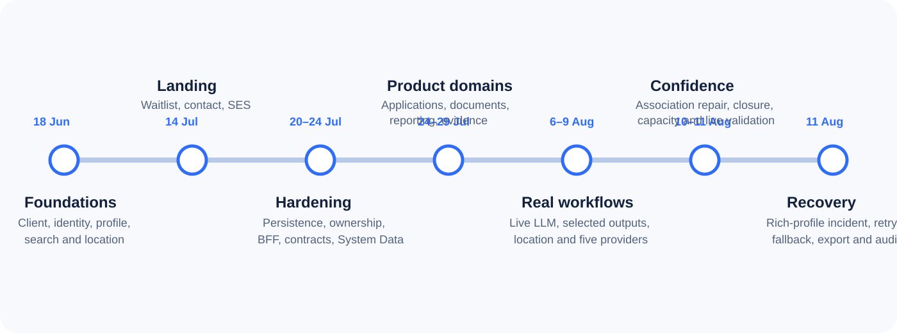
- 18 June
- Initial client, authentication, profile, location, job search and provider repositories establish the application foundation.
- 14–22 July
- Public landing/waitlist work is followed by identity hardening, durable migrations, HttpOnly session architecture, vulnerability gates and accessible flows.
- 22–24 July
- System Data and Playwright/Cucumber are imported; generated client binaries are removed; producer-owned contracts and clean builds become policy.
- 24–29 July
- Application tracking, document storage/export, reporting, payments, evidence revisions, snapshots and claim provenance become separate owned domains.
- 6–9 August
- Real OpenAI paths, retained generation, exact document selection, uploads, Location Service/Google isolation and five-source discovery are integrated.
- 10–11 August
- Realistic E2E exposes application/document association gaps; private-beta closure, live providers and capacity validation follow.
- 11 August
- A rich real profile exposes duplicate structure and output/deadline weaknesses. Repair, bounded retry, unknown-outcome reconciliation, deterministic fallback and export quality are strengthened.
History boundary. The repositories visible here were migrated or created in June–August 2026; this timeline describes evidenced repository history, not undocumented work before the recorded baselines.
Connected product walkthrough
Every screen is backed by an ownership decision
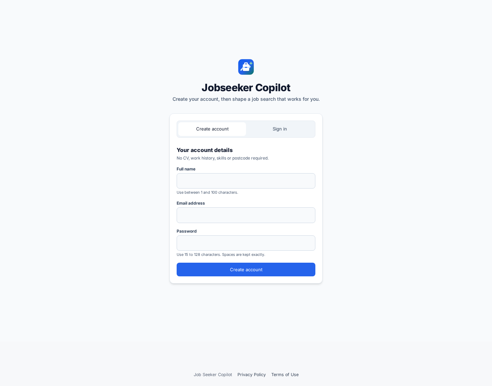
Registration. Minimal first entry; no CV or postcode required. Browser tokens remain in HttpOnly cookies.
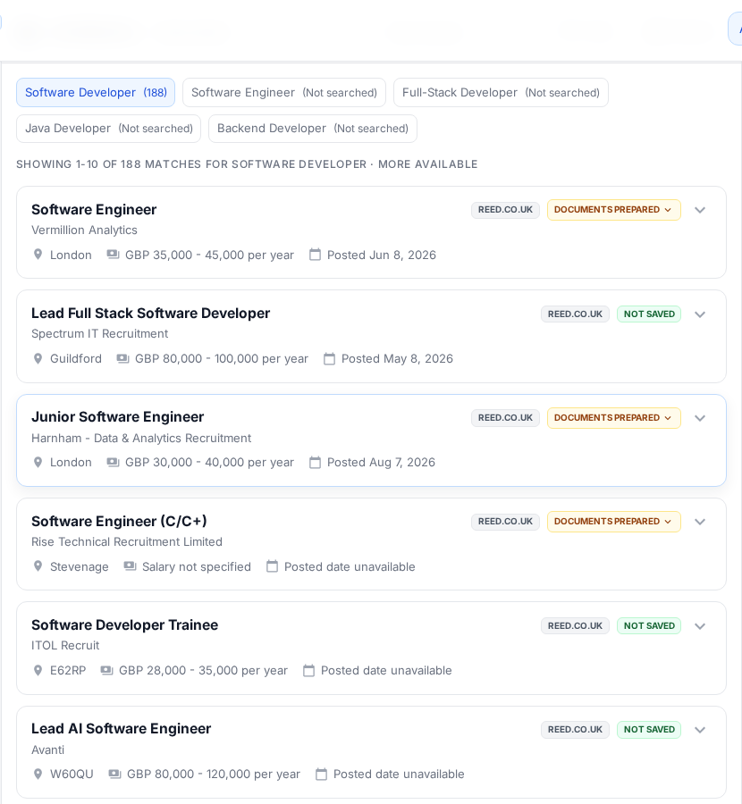
Discovery. Provider status, source attribution and application state are visible rather than hidden.
Account
→Profile/evidence
→Search/detail
→Save
→Select evidence
→Generate/upload
→Track/report
| User step | Backend engineering | Durable truth |
|---|
| Register/sign in | BFF cookie and CSRF boundary; UMG; RS256/JWKS | Authentication DB |
| Build profile | Progressive sections, revisions, confirmation and provenance | Profile DB |
| Discover/save | Five-provider fan-out, mapping, dedupe and snapshot | Job DB |
| Generate | Evidence snapshot, wallet reservation, LLM validation and fallback | Generation ledger + Store |
| Apply/track | Exact document selections, immutable events and transitions | Application DB |
| Report | Read-only projections from owner-scoped services | Upstream owners |
Architecture principles
Decomposed by ownership, corrected by failure
One authoritative owner
Accounts, profile evidence, saved vacancies, applications, documents, wallet entries and operation checkpoints have explicit systems of record.
Gateways isolate trust
Browser, provider and model DTOs/credentials stop at controlled boundaries. Domain services consume canonical contracts.
Immutable references
Evidence snapshots, saved jobs, document versions and applied selections resist later mutation.
Failure is state
Retries, ambiguous outcomes and partial side effects are persisted and reconciled rather than hidden behind a generic error.
Evolution pattern
Original simplification
Generate content, save output and continue synchronously.
→
Current operation
Persist intent, snapshot inputs, reserve credit, checkpoint side effects, validate output, approve exact versions and reconcile application references.
Why microservices?
Different trust, state and failure boundaries—not repository count for its own sake.
Why contracts?
Independent repositories otherwise compile against yesterday’s assumptions.
Why fixtures?
Repeatable failure and zero-spend regression, kept distinct from live confidence.
Architecture was not fixed in advance. Document association, rich evidence, provider inconsistency and realistic concurrency each forced clearer ownership or recovery rules.
Full system/domain architecture
Major boundaries without a 30-service spaghetti diagram
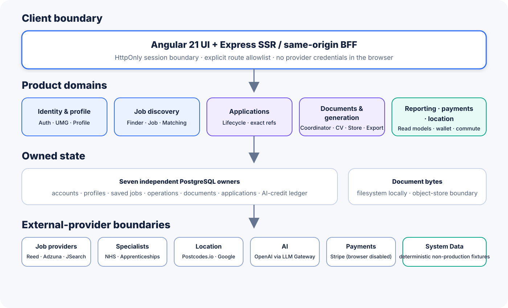
Browser boundary
Angular + Express BFF, allowlisted routes, HttpOnly cookies and CSRF.
Owned state
Seven PostgreSQL owners plus document bytes in an object-provider boundary.
External boundaries
Five job sources, OpenAI, Google, Postcodes.io and disabled-by-default Stripe.
Runtime communication map
Six principal call paths explain the service topology
Identity and profile
Browser → Client BFF → User Management Gateway
UMG calls Authentication for sessions and User Profile for profile/evidence. Downstream services validate the authenticated subject independently.
Vacancy discovery
Client → Job Finder → Job Service
Job Service fans out to Reed, Adzuna, JSearch, NHS and Apprenticeships gateways, then calls Matching for application and commute enrichment.
Application documents
Client → Document Generation Gateway
The coordinator calls Profile, Job, CV/Letter, LLM, Payment, Store, Export and Application Tracker through durable checkpoints.
Applications and reporting
Client → Job Finder / Reporting Gateway
Application Tracker owns lifecycle truth. Reporting Service reads Tracker, Store and Profile without mutating any owner.
Location and commute
Client → Location Gateway → Location Service
Location Service calls Google Maps and Postcodes.io gateways; Job Matching consumes only provider-neutral location/route results.
Deterministic verification
E2E → Client + System Data
Fixture-mode gateways read governed provider/persona data. Live profiles replace only approved external boundaries while keeping application ownership unchanged.
31reviewed repositories
27Java/Spring applications
7PostgreSQL owners
28composed application processes
Reading rule. An arrow means an authenticated/runtime API call, not shared-database access. Pages 39–45 name every repository, its state and both sides of its communication boundary.
Frontend and same-origin BFF
The Angular application is a product boundary, not a thin skin
Major user areas
- Registration, sign-in, refresh and return
- Dashboard, profile, preferences and evidence manager
- Search, provider status, job details and commute
- Evidence selection and asynchronous generation
- Documents, versions, archive/recovery and downloads
- Applications, exact selections, status and reporting
Engineering behaviour
- Generated/typed API models where contracts exist
- Same-origin Express route allowlist
- HttpOnly session cookies; no bearer token in localStorage
- CSRF on state-changing proxy routes
- Provider URLs/content treated as untrusted
- Loading, partial, empty, expired and recoverable states
app.post('/api/auth/refresh', async (req, res) => {
await proxyUserManagementRequest('/api/auth/refresh', 'POST', req, res, true);
});
if (forwardSessionCookies && result.setCookies.length) {
res.setHeader('Set-Cookie', result.setCookies);
}
registerDocumentGenerationRoutes(app, {
accessCookieName, csrfCookieName, origin, timeoutMs
});
Why the BFF exists. Browser code never chooses arbitrary service destinations or stores access tokens. The server boundary converts cookies into controlled downstream requests and stable, redacted failures.
The dashboard composes application, document and reporting state from separate owners without becoming their database.
Authentication and session boundary
Identity is derived, forwarded and independently enforced
Browser cookie + CSRF
→Express BFF
→User Management Gateway
→Authentication Service
→RS256 subject / JWKS
Authentication owns
- canonical email identity and password state;
- registration, login, refresh, logout and reset;
- refresh/session lifecycle in PostgreSQL;
- asymmetric token signing and public JWKS.
Consumers enforce
- validated token subject, never caller-supplied user ID;
- route-scoped service identities;
- owner-scoped reads and writes;
- redacted browser-safe error contracts.
Architecture change
Earlier risk
Bearer/session material in browser storage and caller-controlled downstream identity widened the impersonation boundary.
→
Current boundary
HttpOnly cookies terminate at the same-origin BFF; gateways/services derive and verify the subject independently.
| Control | Evidence | Limit |
|---|
| Credential persistence | Migration-backed PostgreSQL | Local/private-beta operation is not a security certification. |
| Abuse resistance | Bounded login attempts, input normalisation, stable errors | Production threat monitoring still requires deployed operations. |
| Lifecycle | Refresh/logout/reset and account cleanup calls | Cross-service retention policy remains ongoing product work. |
Evidence basis: authentication/session contracts, BFF route policy, database migrations, JWKS verification and retained registration/return journeys.
Profile and Evidence Library
Career history is structured product data
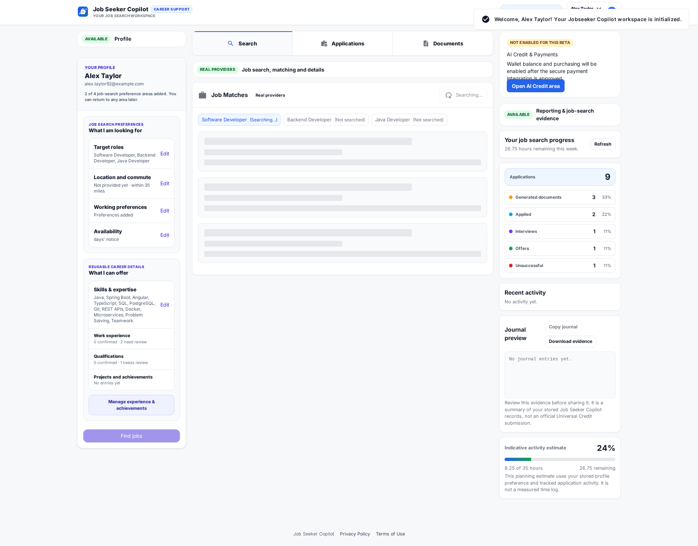
Synthetic fixture: progressive employment, projects, qualifications, skills and preferences.
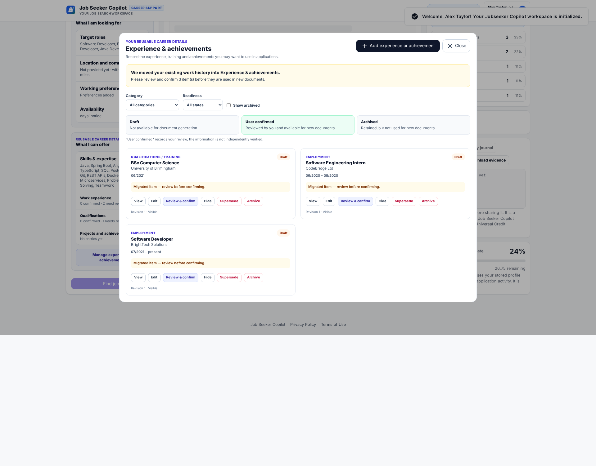
Synthetic fixture: evidence entries expose category, confirmation, provenance and revision state.
Entry
Stable category and identity; visibility, lifecycle and review state.
Revision
Immutable facts, creator, confirmation and content digest.
Snapshot
Purpose, selected revisions, section order, profile revision and digest.
Why this exists. Repeatedly pasting a free-text biography into a model makes provenance and later correction impossible. Structured evidence allows a user to confirm facts once, select them for a purpose and retain exactly what supported a generated document.
Purpose-bound evidence selection
Selection becomes an immutable generation input
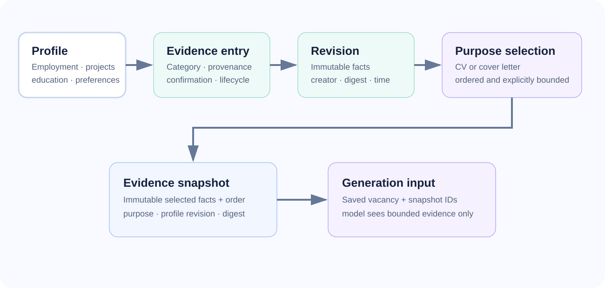
EvidenceSnapshot create(userId, request) {
require(profile.revisionId && profile.contentDigest);
for (entryId : request.entryIds) {
revision = eligibleUserConfirmedRevision(entryId, userId);
enforceSectionOrderAndFactLimit(revision);
snapshot.addSelection(copyFactsAndDigests(revision));
}
snapshot.snapshotDigest = digest(snapshot);
return repository.saveAndFlush(snapshot);
}
CV purpose
Allows broad but bounded career evidence and selected section order.
Cover-letter purpose
Can use a narrower, vacancy-specific evidence subset.
Application provenance
Snapshot and claim-ledger IDs/digests travel with document versions.
Boundaries. Duplicate selections, unconfirmed/latest-invalid revisions, hidden/review-required evidence and oversized snapshots fail before the model call.
Job discovery deep dive
Five providers become one truthful product response
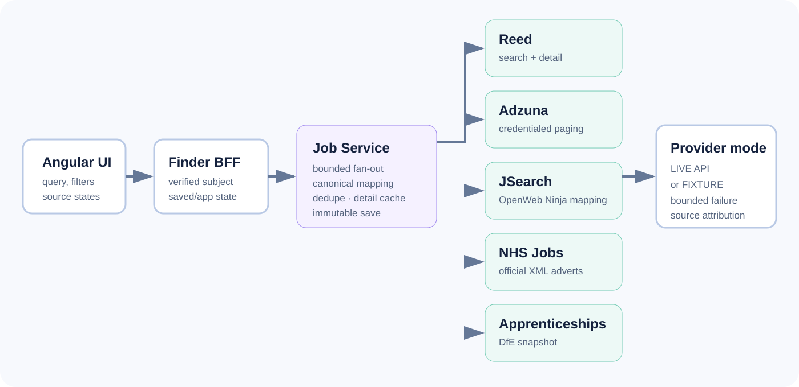
Fan-out
Provider calls are bounded independently. One failure can produce a partial response rather than erase healthy sources.
Mapping
Adapters convert provider IDs, dates, salary, workplace type, descriptions and source URLs.
Save
The selected result is hydrated where supported and persisted as an immutable vacancy snapshot.
Point-in-time live-provider evidence. Changing external adverts and provider uptime are not regression assertions.
Provider architecture
Each source has different contracts and failure shapes
| Provider | Authentication/acquisition | Mapping/detail behaviour | Modes and known limits |
|---|
| Reed | API key; bounded search/detail calls | Dedicated detail endpoint, source/apply URLs, salary and posted data | Fixture default; bounded live sample; advert text can be incomplete |
| Adzuna | App ID/key; paged search | Credentialed pagination, workplace type and canonical mapping | Fixture default; paging/quota and provider date differences |
| JSearch | OpenWeb Ninja API key | Provider records mapped from aggregated upstream sources | Fixture default; IDs, descriptions and dates vary |
| NHS Jobs | Official self-serve XML path | Authoritative NHS identity and advert/source provenance | Live path plus deterministic in-service fixture |
| Apprenticeships | DfE Display Advert API v2 credentials | Authenticated acquisition to atomic snapshot; training details | Readers see last complete snapshot, never half-refresh state |
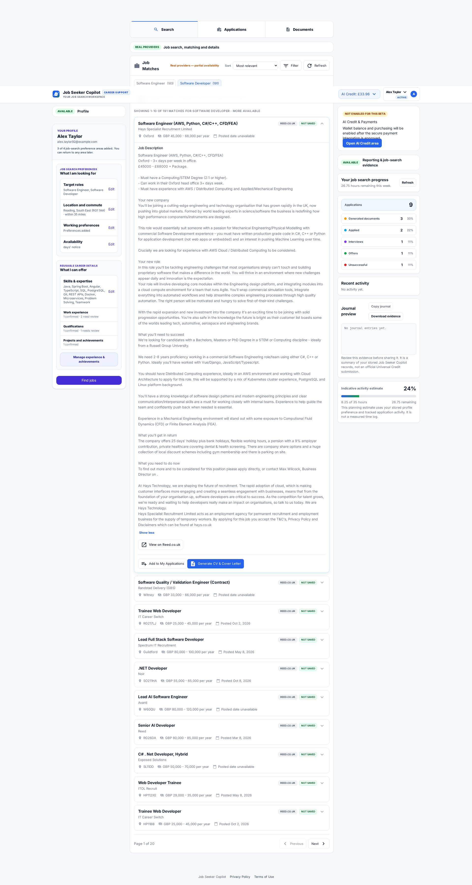
Targeted view of a synthetic expanded advert, provider status, source and generation controls. Provider text is displayed as untrusted content.
Engineering work beyond “calling an API”. Authentication, paging, XML/JSON shape, missing fields, status/date semantics, source identity, provider errors, attribution, terms-safe caching and deterministic equivalents all differ.
Canonicalisation and deduplication
Heterogeneous adverts need explainable identity
Canonical fields retained
- canonical job ID and provider/external IDs;
- all source references and canonicalised URLs;
- title, company, location and workplace type;
- salary, posted/expiry dates and description;
- specialist/apprenticeship details and provenance.
Duplicate signals
- same canonical apply URL;
- overlapping source/apply options;
- normalised company + high title similarity;
- normalised location + compatible dates;
- compatible descriptions within configured thresholds.
if (sameCanonicalApplyUrl(left, right) || overlappingApplyOptions(left, right)) return 1.0;
if (sameCompany(left,right)
&& titleSimilarity(left,right) >= 0.90
&& sameLocation(left,right)
&& postedDatesCompatible(left,right)
&& descriptionsCompatible(left,right)) return 1.0;
mergeDuplicateJobs(primary, duplicate); // also merges every source reference
Naïve result
Two apparently identical cards or, worse, one merged record that loses the source needed to apply.
→
Current result
One canonical display record can retain multiple provider references, a preferred apply URL and field provenance.
Known boundary. Deduplication is deliberately rule-based and explainable. It can still miss semantically identical adverts or avoid merging uncertain ones; it is not an opaque similarity model.
Applications and tracking
A saved vacancy becomes owned lifecycle state
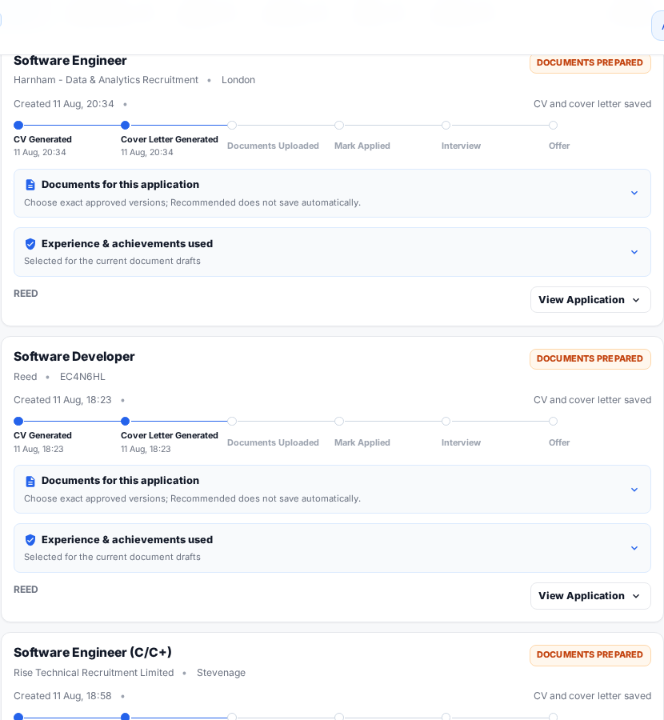
Application state, milestones and exact document selection remain visible after generation.
Identity
Owner + canonical/provider/external job identity; idempotent creation independent of generation.
Lifecycle
SAVED → DOCUMENTS_GENERATED → APPLIED → INTERVIEW → OFFER → ACCEPTED, with guarded transitions.
History
Immutable events and milestone dates survive refresh and reporting projection.
PUT /applications/{id}/document-selections
// CV and cover-letter slots are both mandatory:
// SELECTED(exact approved version) or OMITTED.
// Store verifies owner, type, availability and provenance.
// APPLIED freezes both choices atomically.
Separation of truth. Document Store proves what a version is and whether it is available. Application Tracker decides which exact versions the candidate selected and whether that choice is now frozen.
Evidence basis: Tracker and Generation contracts, immutable-event persistence, Store reference verification and the retained application/document-selection journey.
Document architecture
A document is a family, immutable versions and files—not one mutable blob
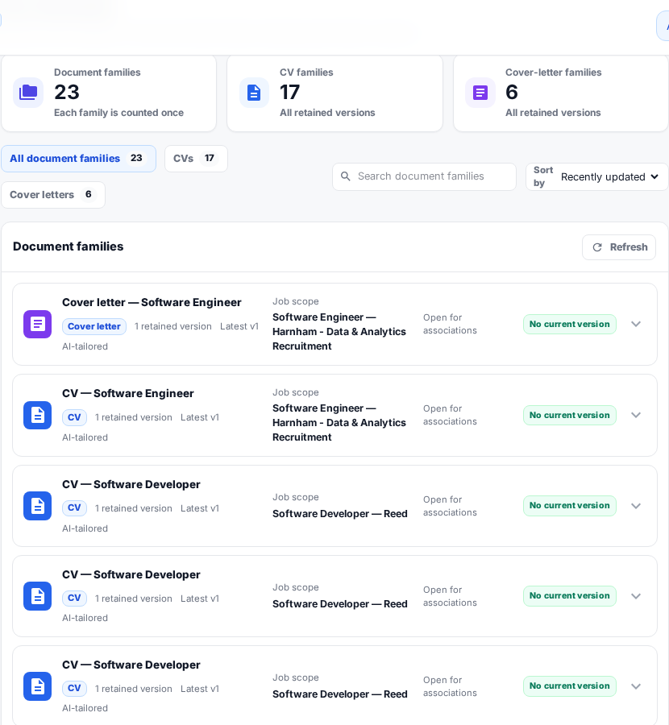
Families expose type, job scope, source, retention, current state and application associations.
Document Store owns
- family and immutable version records;
- generated/uploaded source and lineage;
- current/approved pointers;
- DOCX/PDF metadata, checksum and MIME;
- filesystem bytes locally or S3-compatible provider;
- archive, restore, recoverable delete and tombstones.
Upload boundary
PDF/DOCX ≤10 MiB; bounded extraction; MIME/signature checks; isolated ClamAV scanning; no model or AI-credit call.
| Lifecycle action | Meaning | What it does not do |
|---|
| Set current | Select family recommendation | Does not rewrite an application |
| Approve | Make exact version eligible | Does not auto-select it for a job |
| Archive/restore | Reversible organisation state | Does not mutate bytes |
| Delete/recover | Recovery-window lifecycle | Purge remains separately controlled |
Historical problem solved. Regenerating a CV tomorrow must not silently change the version associated with yesterday’s application.
Document/application lineage
Mutable convenience pointers, immutable historical references
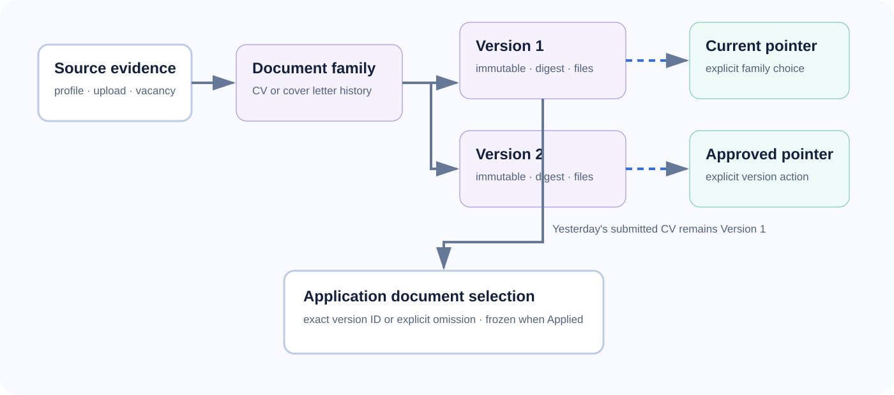
Evidence lineage
Profile revision, evidence snapshot IDs/digests and claim ledger travel with generated versions.
File lineage
Rendered text, DOCX/PDF metadata and checksums identify exact artifacts.
Application lineage
Tracker independently verifies owner/type/version and freezes exact selected or omitted slots.
No distributed database illusion. Stable keys, independent verification and reconciliation replace an impossible cross-service ACID transaction. Partial completion remains detectable and resumable.
Generation orchestration
Generation is a durable product operation
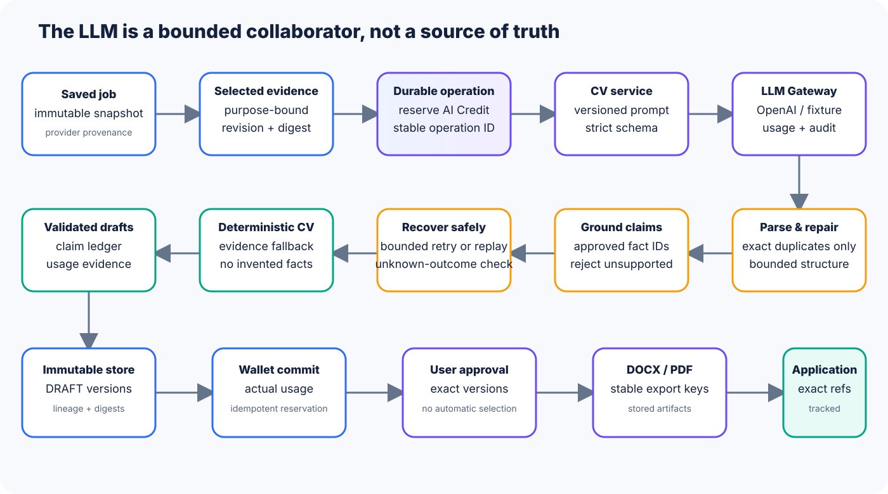
Before the model
Persist operation/deadline; resolve saved vacancy; create purpose snapshots; estimate and reserve credit.
After the model
Validate claims; store draft versions; commit actual usage; wait for explicit approval.
After approval
Set pointers; export exact versions; create/reconcile application and exact document selections.
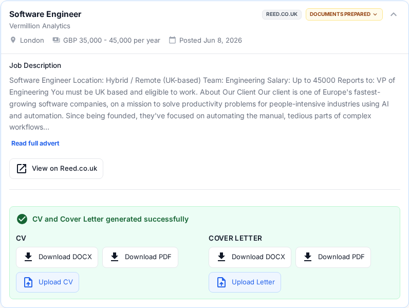
Real vacancy and provider path; exact generated drafts expose DOCX/PDF only after the operation completes.
Grounding and recovery
Generated content is useful only after the product can trust it
Saved vacancy
+Approved evidence snapshot
→Bounded generation
→Validate or recover
→Versioned draft
Bounded request
The service sends the vacancy, ordered evidence, purpose and schema version—not unrestricted profile data. Trusted contact identity stays outside generated content.
Typed validation
Strict parsing, structural limits and evidence-path checks reject unsupported qualifications, dates, metrics, employers or technologies.
Safe recovery
Exact duplicate structure may be repaired and revalidated. Classified retry is bounded; uncertain provider outcomes are reconciled before any new paid call.
| Condition | Product response | Protection |
|---|
| Harmless exact duplicate | Remove duplicate, then repeat full validation | No semantic rewriting |
| Unsupported claim | Reject generated draft | Approved evidence remains authoritative |
| Known retryable provider failure | One bounded retry under the same operation | Stable operation and wallet keys |
| Outcome unknown | Reconcile retained outcome before deciding | No blind duplicate call or charge |
| No acceptable generated CV | Create a conservative evidence-based fallback | Copied facts only; provenance retained |
Failure exposed by realistic use
A rich profile produced duplicate structure and then reached the previous output/deadline boundary—conditions compact fixtures had not represented.
→
General product correction
Budgets, repair, claim validation, selected-output recovery, outcome reconciliation and deterministic fallback now form one tested recovery policy.
Why this matters. The product can reject an unacceptable generated response without losing the user’s evidence selection, duplicating a wallet charge or pretending the response was valid.
Document export
Structured content must still become a professional artifact
Privacy-safe synthetic persona; generated during the successful live-provider/OpenAI showcase. Real candidate documents are not retained in source control.
Typed render model
Sections, headings, roles, bullets, dates and contact fields are accepted as structured content—not executable or model-supplied HTML.
Editable and final formats
Apache POI builds DOCX and OpenPDF builds A4 PDF. Both are returned to Document Store with MIME type, size, checksum and stable export identity.
Visual controls
Heading hierarchy, compact spacing, keep-with-next, indentation, page breaks, headers and pagination are deterministic renderer concerns.
Replay safety
Repeating an export operation uses the exact source version and stable key; it does not silently create unrelated lineage.
Evidence of correction. Rich-profile inspection exposed weak hierarchy and page-flow regressions that compact fixtures did not show. The renderer and its visual regression checks were corrected as general product behaviour.
Wallet and payment integrity
Paid operations need accounting behaviour, not just a checkout button
Estimate
→Reserve with operation key
→Model call
→Commit actual usage
orSafe release/reconcile
Payment Service
Owns wallet balance, append-only ledger, reservations, expiry and reconciliation in PostgreSQL.
Payment Gateway
Exposes browser-facing wallet, pricing and checkout operations and delegates owned mutations.
Stripe Gateway
Isolates checkout/session and signed-webhook provider details from wallet accounting.
| Reservation state | Allowed meaning | Retry property |
|---|
| RESERVED | Credit temporarily unavailable while operation is active | Same operation key returns/reconciles same reservation |
| COMMITTED | Actual model usage charged | Repeated commit is idempotent |
| RELEASED | Provider use known not to require charge | Stable key cannot create a second reservation |
| Unknown/recovery | Outcome needs operator/automatic reconciliation | No speculative release and re-charge |
Implemented path
The client registers payment BFF routes and calls Payment Gateway. Fixture purchase, reservation, commit/release, operation keys, expiry and recovery are composed.
Current manual profile
real-providers deliberately keeps Stripe in fixture mode. Live checkout and real charges were not exercised by the evidence in this dossier.
Claim boundary. This proves wallet and provider-boundary engineering. It does not prove a production billing launch, reconciliation operations at scale or successful live Stripe checkout.
Location and commute
Persistable place truth is separated from transient provider data
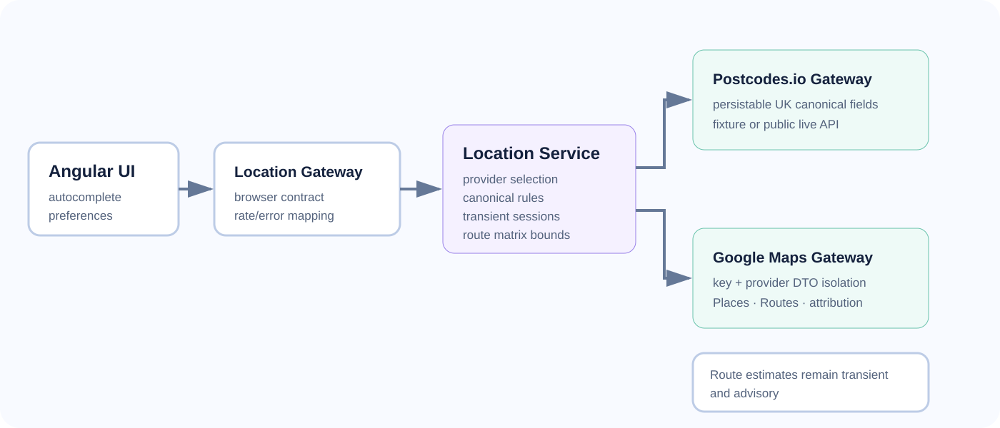
Canonical location
Stable label, country, coordinates/postcode authority and provider provenance suitable for profile persistence.
Autocomplete session
Bounded provider token/session and suggestions remain transient; attribution is required.
Commute matrix
At most five eligible destinations, selected travel modes and advisory route estimates—never suitability scores.
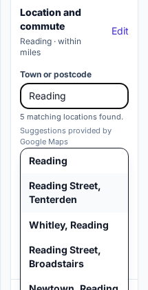
Live browser evidence returned five attributed suggestions. A suggestion is resolved to a canonical place before it can become persisted profile data.
Why another service? The original Location Gateway directly represented Postcodes.io-style operations. Adding Google Places/Routes required a provider-neutral orchestration layer so the browser contract, canonical persistence and provider-specific credentials/DTOs stayed separate.
Reporting architecture
Reporting observes domain truth; it does not own or mutate it
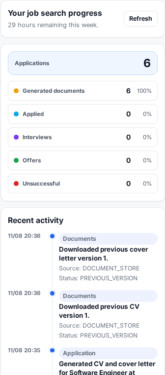
Application totals, status buckets, recent activity and indicative time are projected from owner services.
Sources
Tracker applications/events, Store document metadata and Profile data through owner-scoped service APIs.
Read models
Application totals/status/date buckets, recent content-free activity, indicative time and text evidence export.
Privacy
Document activity reports version/type/lifecycle—not CV or letter content. Empty, small and rich histories have explicit behaviour.
Tracker truth
+Document metadata
+Profile context
→Reporting projection
→UI / evidence.txt
Indicative means indicative. Time estimates are explanatory product aids, not payroll, benefits or regulatory calculations.
Evidence basis: Reporting OpenAPI 2.1, summary/journal/evidence routes, document-activity projection and the retained reporting journey.
System Data
Deterministic personas are engineering infrastructure
What it provides
- versioned synthetic candidate personas;
- provider responses and error states;
- named reset/seed/verify lifecycle;
- service-owned cleanup orchestration;
- stable model fixture responses;
- guarded non-production APIs.
What it cannot prove
- current provider uptime or changing advert shape;
- real model quality, latency or cost;
- rich real-person evidence distribution;
- production security/operations;
- employment outcomes.
Unsafe testing risk
Captured personal/provider data, accidental live calls, paid model spend and non-repeatable failures.
→
Governed test state
Synthetic datasets, explicit provider modes, authenticated owner reset and deterministic verification.
Why canonical personas remain
Minimal, typical, rich, stress, uploaded-CV, manual-first and career-changer profiles exercise different structures while staying source-controlled and non-personal. A persistent manual account is separate runtime data and is never a fixture dependency.
7canonical persona shapes
0paid provider calls in fixture regression
1named-state owner for orchestration
strictnon-production safety boundary
Environment architecture
Separate confidence questions require separate modes
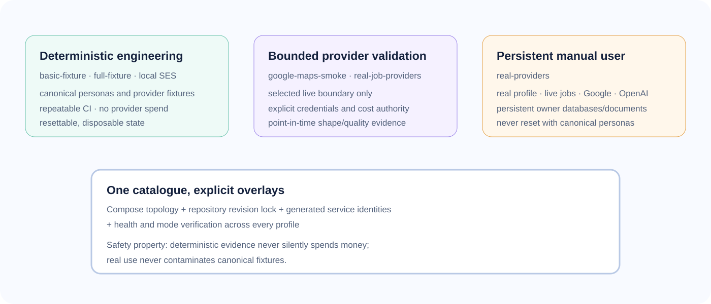
| Profile | Purpose | External state |
|---|
| basic-fixture | Account/profile/location/search fast path | Deterministic |
| full-fixture | Complete regression/product showcase | Deterministic |
| full-local-ses | Production email adapter against LocalStack | Local deterministic |
| google-maps-smoke | Only Google live | Explicit bounded live |
| real-job-providers | Five jobs + Postcodes live; LLM/Stripe fixture | Explicit live jobs |
| real-providers | Live jobs, Postcodes, Google and OpenAI; Stripe fixture | Persistent authorised manual user |
Audited evidence. The retained manual-environment check reported all 28 application services healthy. Its PostgreSQL and document volumes survive ordinary restarts; secrets and personal data remain outside Git.
Executable showcase
The demonstration is a passing browser journey, not a screen montage
Scenario: Alex moves from a new account to accepting an offer
register → build a rich evidence library → discover a live vacancy
→ save the vacancy → generate and review a CV and cover letter
→ inspect documents and reporting → progress the application
→ record applied, interview, offer and acceptance states
PASSscenario and preflight exit codes
8:361920 × 1080 master recording
7chapter clips cut from one timeline
2generated PDFs downloaded and shown
Readable specification
The current feature contains 22 top-level behaviour steps and remains the authoritative narrative for the recording.
Browser execution
Playwright drives the real Angular UI, BFF and downstream services, including downloads and durable state transitions.
Recorded evidence
Timeline markers derive onboarding, profile, discovery, generation, documents, reporting and tracking clips from the same passing run.
Feature
→Preflight
→Isolated runtime
→Browser assertions
→Master + clips + PDFs
Disclosure. The 12 August recording uses a synthetic persona to protect personal data, but its vacancy providers and OpenAI path are live. Its report records fixtureMode: false, providerMode: live and successful scenario exit. This is bounded live evidence, not a claim of production availability.
Testing evidence by layer
Each layer answers a different confidence question
| Domain | Unit/component | Integration/contract | E2E/live evidence |
|---|
| Identity/profile | validation, revisions, cookies | PostgreSQL, JWKS, owner denial | register/profile/reload/return |
| Job discovery | adapters, mapping, dedupe | producer clients, partial failure | five-source fixture; bounded live samples |
| Applications | transitions, idempotency | Store reference verification | save, select, apply, interview, offer, accept |
| Documents | lifecycle, MIME, renderer | PostgreSQL/filesystem/ClamAV | upload/generate/history/download |
| Generated content | parser, repair, claims, fallback | wallet/store/tracker recovery | fixture matrix + bounded paid samples |
| Location | canonical mapping, session bounds | Postcodes/Google clients | fixture commute + live Google smoke |
| Reporting | buckets, activity, redaction | owner-scoped upstream clients | empty/rich history and UI |
| Infrastructure | catalogue/policy/render tests | clean build and health/mode checks | capacity and restart persistence |
32/32Cucumber scenarios at audited 11 August revisions
244/244journey steps in that retained run
460/460Angular tests in closure evidence
248/248CV/letter domain tests in closure evidence
Proves quickly
Validation, mapping and deterministic edge behaviour.
Proves together
Schema compatibility, persistence and multi-service ownership.
Proves realistically
User comprehension, live shapes, rich data and dated workload behaviour.
Revision boundary. At the audited 11 August closure revisions the deterministic regression passed 32 scenarios and 244 steps, alongside component, contract, persistence, security and accessibility suites. Several repositories changed on 12 August, so those totals are not presented as a current-HEAD rerun.
Real/manual confidence
Changing data and paid integrations are tested without contaminating regression
Deterministic tests answer “does the same behaviour still work?” A persistent manual account and explicitly authorised live boundaries answer a different question: “does the product remain useful with a rich profile, current adverts and non-deterministic providers?”
| Boundary exercised | Observed evidence | What it does not prove |
|---|
| Persistent account/profile | Structured work, project, education and skills data retained through ordinary service restarts | Production backup or multi-user operations |
| Current vacancies | Provider-backed discovery and detail through owned Reed, Adzuna and JSearch gateways | Provider uptime, completeness or long-term contract stability |
| Location | Google-attributed autocomplete and canonical resolution through Location Service | Every route, country or travel-mode combination |
| Document workflow | Realistic rich evidence exposed selection, deadline, recovery, export and association defects | Universal document quality or employment outcome |
| Bounded live showcase | Synthetic identity + live providers/OpenAI completed search → generation → documents → tracking | Public availability, load or production support |
Useful separation
Real personal information stays in runtime databases and documents, never canonical personas, screenshots or Git.
High-value failures
Rich data exposed issues that compact fixtures missed; corrections became general recovery and regression behaviour.
Honest confidence
Manual evidence broadens confidence, while dated reports and explicit modes prevent it being mistaken for repeatable CI proof.
Confidence gained. The two evidence systems complement each other: deterministic personas protect repeatability; realistic data and live boundaries challenge assumptions about usefulness and integration shape.
Capacity investigation
A failed benchmark found a product defect before it found a server limit
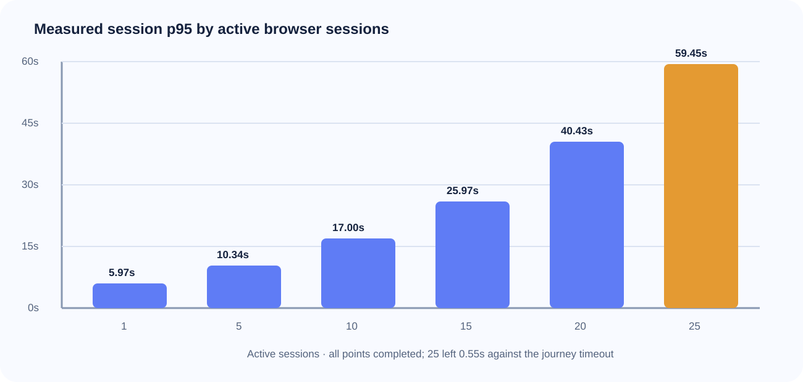
| Sessions | Completed | Session p95 | Response p95 | Peak Docker memory |
|---|
| 1 | 1/1 | 5.97 s | 182 ms | 8.01 GiB |
| 5 | 5/5 | 10.34 s | 571 ms | 8.14 GiB |
| 10 | 10/10 | 17.00 s | 709 ms | 8.35 GiB |
| 15 | 15/15 | 25.97 s | 472 ms | 8.42 GiB |
| 20 | 20/20 | 40.43 s | 609 ms | 8.66 GiB |
| 25 | 25/25 | 59.45 s | 546 ms | 8.64 GiB |
0/25 → 25/25. The original failure was not an application-service crash. A refreshed result gained canonical identity, causing Angular to recreate the job card during interaction. Stable provider-job tracking fixed the browser race.
Interpretation. This was one fixture-backed iteration per level, not a soak test. At 25, all workload scenarios completed with zero application errors, but session p95 left 0.55 seconds against the 60-second deadline. The report also retains expected bootstrap/external-resource response errors and one Docker-stats timeout. Browser workers were outside Docker measurements.
AWS implementation path · topology
Local evidence informs a candidate; it does not validate the cloud
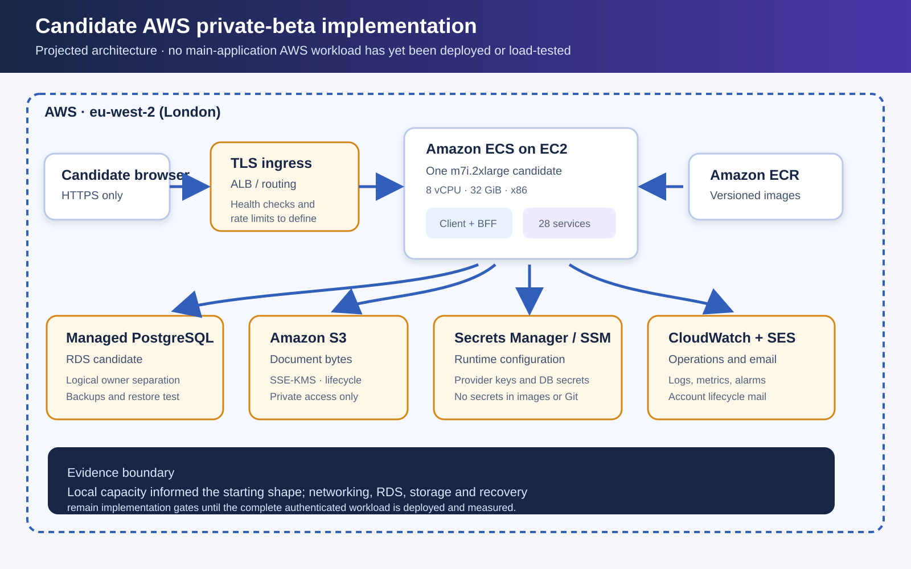
Application compute
Candidate: ECS on one London-region x86 EC2 m7i.2xlarge. ECR supplies versioned images; TLS ingress and health checks sit in front.
Owned data
Move seven logical PostgreSQL owners to managed database boundaries and document bytes to private S3 with managed encryption and lifecycle.
Operations
Secrets Manager/Parameter Store, CloudWatch logs/metrics/alarms, SES account email and tested backup/restore complete the intended control plane.
AWS capability already demonstrated at the public edge. The separate landing/waitlist system has deployed in eu-west-2: Angular → API Gateway → Lambda → DynamoDB/SES, with CloudFormation update, contact delivery and controlled SES bounce/complaint handling evidenced. It is intentionally not presented as deployment of the authenticated platform.
Status: planned. The authenticated application has not been deployed or load-tested on AWS. No main-application AWS resource was created for this evidence and validation spend was $0. The separately deployed landing/waitlist stack is not evidence that the application platform is hosted.
AWS implementation path · decision gates
A credible starting shape with explicit work before public use
8vCPU in the starting compute candidate
32 GiBmemory in one m7i.2xlarge
≈15modelled initial active discovery journeys
$340.33dated 730-hour compute-only arithmetic
Why this starting point
- Local Docker memory reached 8.64 GiB, while service CPU peaked near eight logical cores.
- The 25-session run completed but had no useful deadline margin.
- An initial cap around 15 is intentionally below the functional ceiling.
- ECS on EC2 accommodates the current multi-container topology while reservations are refined.
What the figure excludes
- RDS, EBS/S3 and backup storage;
- load balancing, public IPv4, NAT and transfer;
- DNS, logs, monitoring, support and tax;
- high availability or a second node.
Required implementation and validation sequence
1Define task reservations, ingress, private networking and database ownership.
2Build digest-pinned images and inject runtime secrets without placing them in Git or images.
3Provision bounded eu-west-2 infrastructure with budget alarms and destroy controls.
4Validate migrations, object storage, email, health checks, backups and restore.
5Measure 10/15/20 journeys, failure behaviour and recovery before revising the cap.
Decision discipline. The candidate is useful because it turns local measurement into an implementable hypothesis. It becomes an AWS capacity claim only after the intended network, compute, database and storage shape is deployed and measured.
Contracts and multi-repository delivery
Independent repositories require explicit compatibility discipline
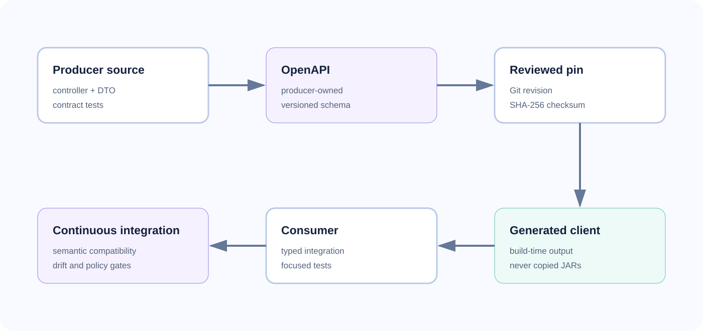
Producer ownership
Controller/DTO source and contract tests produce the reviewed OpenAPI. Consumers do not edit private copies.
Revision + checksum
Consumer metadata names the producer Git revision and schema SHA-256, making drift reviewable.
Generated clients
Maven/TypeScript clients are disposable build output. Checked-in local JAR coupling was removed.
Delivery engineering
| Concern | Practice | Failure prevented |
|---|
| Branches | Feature branch → PR → green CI → develop; main separately protected | Unreviewed integration changes |
| Parity | Workspace lock and catalogue coordinate reviewed revisions | “Works only in my checkout” |
| Semantic compatibility | Policy tests inspect required routes/schemas/enums | Compiles but changes meaning |
| Security/build gates | Secret history, dependency, licence, clean clone/container checks | False-green or irreproducible releases |
Architecture consequence. Contract mismatch bugs—claim ledger bounds, timestamp offsets, application provenance and generated client metadata—became explicit PRs and regression gates rather than runtime surprises.
Major defects and design gaps · I
Failures that changed ownership or workflow
1Generated document not reliably associated with its application.
Found by realistic E2E. Generation linked selections before authoritative application identity/reconciliation was ready. The flow now creates/relinks the application and verifies exact references before selection; fixture and E2E preserve regression coverage.
2Capacity refresh destroyed the job card under interaction.
Concurrent Playwright journeys exposed unstable Angular tracking when canonical identity appeared after refresh. Stable provider-job identity changed the same workload from 0/25 to 25/25.
3Google location did not fit the direct postcode design.
Provider-specific concepts risked leaking into persisted profiles. Location Service was extracted so canonical place/route semantics remain independent of Google and Postcodes.io.
4Compact fixture profiles hid realistic selection pressure.
A rich profile exposed omitted and poorly prioritised evidence. Purpose-specific snapshots and relevance selection now preserve traceable inputs without making real personal data a test dependency.
5Selected-output recovery assumed both document types existed.
CV-only and letter-only journeys exposed an old paired-output assumption. Operation state and UI now preserve truthful partial success and deliberate omission.
6Provider dates, IDs and offsets did not share one meaning.
Compatibility normalisation was added at provider/domain boundaries while source attribution and original references remain visible for detail and application history.
Each fix added regression protection at the lowest useful layer and, where user behaviour mattered, at browser/E2E level.
Major defects and design gaps · II
Failures that changed recovery, quality or boundaries
7External-call deadlines did not align with durable operation deadlines.
A longer provider allowance alone was insufficient. Gateway bounds, caller read deadlines and persisted absolute deadlines were aligned; ambiguous outcomes enter reconciliation before retry.
8One harmless structural defect could discard a whole document operation.
A narrowly scoped exact-duplicate repair was introduced, followed by the same structural and evidence validation. Semantic rewriting remains prohibited.
9Professional export quality regressed under rich content.
Visual review found weak hierarchy and pagination that unit assertions could not express. A4 flow, spacing and page-break controls were corrected and retained as renderer tests.
10Contract/client drift recurred across independently versioned services.
Producer OpenAPI, reviewed revisions and checksums, regenerated clients and semantic policy gates replaced copied binaries and undocumented assumptions.
11Repository health could disagree with product readiness.
A service returning 200 was not enough. Mode checks, named-state verification, persistent-user journeys and focused cross-owner assertions were added to distinguish liveness from useful behaviour.
12A capability could look ready before its complete user path was ready.
Payment backend/BFF wiring and live Stripe availability are now described separately from the unfinished purchasing interface and standard fixture-mode configuration.
Maturity signal. The important result is not that defects existed; it is that realistic evidence identified why earlier tests missed them and converted them into architecture and regression controls.
Data integrity, privacy and safety
Implemented controls with explicit assurance limits
Identity
HttpOnly cookies, CSRF, verified subjects and route-scoped service tokens.
Lineage
Digests and stable IDs across evidence, jobs, claims, documents and applications.
Untrusted content
Provider text, uploads and model output cross validation/allowlist/scanner boundaries.
Personal data
Real profile/CV/contact data remain in owner databases and outside fixtures, logs and Git.
Secrets
Runtime-only environment mechanism; provider keys remain in owned gateways.
Wallet
Reservations, operation keys, idempotent transitions and unknown-outcome checks.
Implemented, disabled, limited and post-beta
| Classification | Examples |
|---|
| Implemented/demonstrated | Profile/evidence, five-source discovery, applications, document generation/export, reporting, Google autocomplete, persistent local state. |
| Implemented but not exposed | Live-capable Stripe checkout/webhook boundary; browser purchasing remains disabled. |
| Known beta limits | No semantic suitability score; bounded provider/model samples; manual accessibility and production security assurance incomplete. |
| Operational work | AWS application deployment/workload validation, HA/backups/monitoring, larger concurrency and first-user operations. |
| Post-beta product | CV-to-profile import, richer matching, submission confirmation and application-answer tooling. |
No compliance claim. These controls demonstrate design intent and implemented boundaries—not certification, complete penetration testing, production HA or regulatory approval.
Evidence-based release posture
A working controlled beta with a defined route to public operation
What a reviewer can rely on
- the connected application and 28-process runtime exist;
- core candidate state has explicit service/database owners;
- deterministic regression, live boundaries and manual use are separated;
- realistic testing has produced general product corrections;
- capacity evidence and cloud assumptions are dated and qualified;
- the next deployment gates are concrete and testable.
What remains before public beta
- deploy and measure the authenticated AWS workload;
- define production networking, HA, backup/restore and observability;
- complete purchasing UI and live billing assurance if enabled;
- broaden accessibility and independent security assurance;
- operate with pilot users and measure support and employment usefulness.
Confidence chain
Built31 repositories and owned runtime boundaries
→Exercisedbrowser journeys and persistent manual use
→Measureddated regression, live and capacity evidence
→Preparedcandidate AWS topology and release gates
The appropriate claim is not “production complete”. It is that a substantial product has been built, its important workflows have been exercised across real boundaries, its limits are known, and the remaining route to a controlled public beta is explicit.
Pages 39–45 make the system inspectable without private GitHub access: every repository has a purpose, caller, dependency and state description.
Complete repository catalogue · 1 of 7
Client, identity and profile
The 31 repositories comprise 28 composed main-stack runtimes, one separately deployed public landing runtime, and two engineering repositories. Each entry names purpose, communications and state.
Browser boundaryjob-seeker-copilot-client
Purpose. Authenticated Angular product and same-origin Express BFF.
Called by. Candidate browser.
Calls. User Management, Job Finder, Location, Document Generation, Document Store, Reporting and Payment gateways/services.
State. No application database; HttpOnly session cookies and transient UI state.
Identity ownerauthentication-service
Purpose. Accounts, credentials, refresh/session lifecycle, reset and RS256/JWKS identity.
Called by. User Management; resource services read JWKS; lifecycle tooling.
Calls. Profile, Tracker and Store during account lifecycle; optional AWS SES.
State. PostgreSQL/Flyway owns accounts, credentials and session records.
Identity facadeuser-management-gateway
Purpose. Browser-facing registration, session, profile and evidence facade.
Called by. Client BFF, including payment owner resolution.
Calls. Authentication Service and User Profile Service.
State. Stateless; derives trusted identity and returns stable, redacted failures.
Profile owneruser-profile-service
Purpose. Progressive profile, preferences, Evidence Library, immutable revisions and purpose-bound snapshots.
Called by. User Management, Job Finder, Document Generation and Reporting.
Calls. Authentication JWKS for resource identity.
State. PostgreSQL/Flyway owns profile, evidence revisions and snapshot digests.
Trust boundary. The browser never selects arbitrary service destinations or stores bearer tokens. Identity is derived at the BFF/facade and verified again at protected resource services.
Complete repository catalogue · 2 of 7
Job discovery and matching
Job facadejob-finder-gateway
Purpose. Authenticated search, saved-job and application facade.
Called by. Client BFF.
Calls. Authentication JWKS, Job Service, User Profile and Application Tracker.
State. Stateless; retains provider and partial-failure truth in responses.
Job ownerjob-service
Purpose. Five-provider fan-out, mapping, dedupe, detail hydration and immutable saved vacancies.
Called by. Job Finder and Document Generation.
Calls. Five provider gateways, Job Matching and Authentication JWKS.
State. PostgreSQL/Flyway owns saved jobs; bounded search/detail cache.
Enrichmentjob-matching-service
Purpose. Reconciles results with application state and adds advisory commute assessments.
Called by. Job Service.
Calls. Application Tracker and Location Service.
State. Stateless; it does not currently produce a semantic suitability score.
Provider boundaryreed-gateway
Purpose. Reed search/detail authentication, mapping and source identity.
Called by. Job Service.
Calls. Reed API in live mode or System Data in fixture mode.
State. Stateless; bounded timeouts/errors preserve provider attribution.
Provider boundaryadzuna-gateway
Purpose. Adzuna credentialed paging and canonical response mapping.
Called by. Job Service.
Calls. Adzuna API in live mode or System Data in fixture mode.
State. Stateless; workplace type and source provenance are retained.
Complete repository catalogue · 3 of 7
Specialist providers and location orchestration
Provider boundaryjsearch-gateway
Purpose. OpenWeb Ninja JSearch authentication and mapping.
Called by. Job Service.
Calls. OpenWeb Ninja JSearch in live mode or System Data in fixture mode.
State. Stateless; normalises aggregated IDs, dates and descriptions.
Specialist providernhs-jobs-gateway
Purpose. Maps official NHS Jobs Self-Serve XML adverts.
Called by. Job Service.
Calls. NHS Jobs API or an in-service deterministic fixture.
State. Stateless; authoritative source identity flows into saved jobs.
Specialist providerapprenticeships-gateway
Purpose. Acquires and searches DfE apprenticeship adverts.
Called by. Job Service.
Calls. DfE Display Advert API v2 or an in-service fixture.
State. Atomic bounded in-memory vacancy snapshot; no user state.
Location facadelocation-gateway
Purpose. Browser-facing legacy-compatible and v2 UK location routes.
Called by. Client BFF.
Calls. Location Service for both current route families.
State. Bounded postcode cache/rate-limit state; no persisted profile ownership.
Location domainlocation-service
Purpose. Provider-neutral autocomplete, canonical resolution and commute orchestration.
Called by. Location Gateway and Job Matching.
Calls. Postcode.io Gateway and Google Maps Gateway.
State. Transient, bounded suggestion sessions; canonical results remain provider-neutral.
Complete repository catalogue · 4 of 7
Location providers, applications and orchestration
Location providerpostcode-io-gateway
Purpose. Canonical UK place and postcode-provider boundary.
Called by. Location Service.
Calls. Postcodes.io in live mode or System Data in fixture mode.
State. Bounded positive/negative cache; provider credentials and DTOs remain isolated.
Location providergoogle-maps-gateway
Purpose. Sole Google Places/Routes credential, DTO and attribution boundary.
Called by. Location Service.
Calls. Google Places and Routes APIs when explicitly enabled.
State. Transient, bounded provider-session tokens; no persistent candidate data.
Application ownerapplication-tracker-service
Purpose. Owns saved applications, lifecycle transitions, immutable events and exact document selections.
Called by. Job Finder, Matching, Document Generation, Reporting and account lifecycle.
Calls. Document Store for independent reference verification; Authentication JWKS.
State. PostgreSQL/Flyway is the authoritative application record.
Workflow coordinatordocument-generation-gateway
Purpose. Durable generation, approval, upload, export, linking and recovery coordinator.
Called by. Client BFF.
Calls. Authentication, Profile, Job, CV, Payment, Store, Export and Tracker.
State. PostgreSQL/Flyway operation ledger; document bytes remain in Store.
Ownership rule. The coordinator persists intent and checkpoints, but it does not become the owner of profile evidence, vacancies, wallet balances, document files or applications.
Complete repository catalogue · 5 of 7
Document generation, storage, export and reporting facade
Document contentcv-cover-letter-service
Purpose. Projects evidence, requests structured content, validates claims and supplies a conservative fallback.
Called by. Document Generation Gateway.
Calls. LLM Gateway; legacy/domain paths also call Payment, Store and Tracker.
State. No primary DB; optional encrypted short-lived rejected-output quarantine.
Model providerllm-gateway
Purpose. Typed provider-neutral model transport, admission limits, usage and cost evidence.
Called by. CV/Cover Letter Service.
Calls. OpenAI in live mode or System Data in fixture mode.
State. Transient admission/circuit state; no candidate-profile ownership.
Document ownerdocument-store-service
Purpose. Owns document families, immutable versions, lineage, files and retention.
Called by. Client, Generation, Export, Tracker, Reporting and lifecycle paths.
Calls. Authentication JWKS, Application Tracker workflows and ClamAV.
State. PostgreSQL/Flyway plus local filesystem or S3-compatible object storage.
Artifact rendererdocument-export-service
Purpose. Renders structured CV/letter content to DOCX/PDF and ingests bounded DOCX.
Called by. Document Generation Gateway.
Calls. Document Store for exact source/output versions.
State. Stateless; Apache POI/OpenPDF with replay-safe operation keys.
Reporting facadereporting-gateway
Purpose. Authenticated browser facade for summary, journal and evidence-text export.
Called by. Client BFF.
Calls. Authentication JWKS and Reporting Service.
State. Stateless; it does not own reporting data.
Complete repository catalogue · 6 of 7
Reporting, wallet, payments and deterministic data
Read modelreporting-service
Purpose. Builds read-only application, profile and document summaries.
Called by. Reporting Gateway.
Calls. Application Tracker, Document Store and User Profile.
State. No authoritative or cached persistence; upstream owners remain truth.
Wallet ownerpayment-service
Purpose. Owns credit wallets, append-only ledger, reservations and reconciliation.
Called by. Payment Gateway, Stripe, Document Generation, CV and tooling.
Calls. No external provider.
State. PostgreSQL/Flyway owns balances and idempotent accounting transitions.
Payment facadepayment-gateway
Purpose. Wallet, pricing and checkout facade.
Called by. Current Client BFF payment routes.
Calls. Payment Service and Stripe Gateway.
State. Stateless; ordinary purchasing UI and standard live Stripe mode remain unavailable.
Payment providerstripe-gateway
Purpose. Isolates Stripe checkout/session and signed webhooks.
Called by. Payment Gateway and Stripe webhooks.
Calls. Stripe live or System Data fixture; Payment Service fulfilment.
State. Stateless; standard manual profile uses fixture mode.
Non-production datasystem-data-service
Purpose. Versioned synthetic personas, provider fixtures and named-state orchestration.
Called by. Fixture-mode gateways, E2E and authorised operators.
Calls. Guarded reset/seed/verify APIs for Auth, Profile, Tracker, Store and Payment.
State. Source-controlled synthetic datasets and bounded indexes; never production truth.
Complete repository catalogue · 7 of 7
Verification, runtime engineering and public landing
Cross-service verificatione2e
Purpose. Browser journeys, accessibility, workload and executable showcase automation.
Called by. CI and engineering operators.
Calls. Product browser routes and guarded System Data lifecycle APIs.
State. Disposable reports, traces, recordings and downloads only.
Runtime and deliveryinfrastructure
Purpose. Fleet catalogue, Compose profiles, revision locks, builds, operations and documentation.
Called by. Developers, CI and operators.
Calls. Coordinates all runtime repositories plus PostgreSQL, ClamAV and optional tooling.
State. Configuration and persistent volumes; no user-facing domain API.
Separate public runtimejob-seeker-copilot-landing
Purpose. Public product site, double-opt-in waitlist and contact journey.
Called by. Public browser and SES delivery events.
Calls. AWS Amplify/API Gateway/Lambda, DynamoDB, SES and EventBridge/CloudWatch.
State. DynamoDB workflow state; no dependency on the authenticated application.
Runtime support, not repositories
Seven PostgreSQL containers, ClamAV and optional LocalStack/Portainer/Dozzle are meaningful dependencies but excluded from the 31-repository count.
How to verify further
The dossier contains the ownership and communication information needed for first review. Private source, contracts and retained run reports can be reviewed by arrangement where deeper assurance is appropriate.
Confidence is built by connecting claims to explicit boundaries: what exists, what called what, which component owns the state, what was exercised, and what remains planned.
This dossier accompanies a job-specific CV, cover letter and executable product demonstration. Contact details remain in the accompanying application documents.